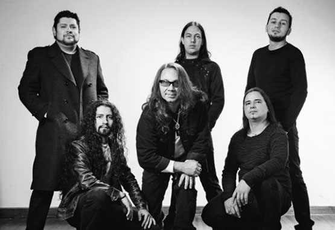

Quien es Kraken?
Kraken es una banda colombiana de hard rock y heavy metal, fundada en la ciudad de Medellín, Colombia en junio de 1984.1 De gran auge en Colombia e Hispanoamérica desde los años 80, llegando a sonar en Europa y América y países como Estados Unidos, México, Argentina, Canadá, Perú, España y Japón, entre otros. Su vocalista, letrista y líder fue Elkin Ramírez hasta su deceso que se produjo el día 29 de enero de 2017
Elkin Ramírez a inicios de 1996 convoca y adiciona nuevos músicos para continuar realizando innumerables conciertos. Además, adopta la modalidad “Kraken Acústico” para estar más cerca de sus seguidores y en mayo de 1997 Kraken es contratado para presentarse por primera vez en el festival “Rock al Parque” de la ciudad de Bogotá. “Una leyenda del Rock” es su sexto álbum editado en 1999 y con los temas “El idioma del Rock” y “Frágil al Viento” logra los primeros lugares en las listas radiales de Colombia, Ecuador y Venezuela. Ese año Kraken es contratado por primera vez para realizar un concierto en el hermano país ecuatoriano en el “Teatro del Ágora” de la ciudad de Quito, logrando convocar a más de 7.000 personas.
Info:
Kraken, agrupación colombiana fundada en 1984 de tendencia Hard Rock, Rock and Roll y Rock Progresivo. Ha grabado hasta el momento 9 álbumes y realizado giras en su país e internacionalmente grandes conciertos en Venezuela, Ecuador, Bolivia, Argentina, Mexico y Estados Unidos de América..
